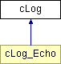

Hlavní stránka
Tøídy
Soubory
Ostatní stránky
Seznam tøíd
Hierarchie tøíd
Seznam èlenù tøíd
Dokumentace tøídy cLog
Diagram dìdiènosti pro tøídu cLog

Seznam všech èlenù.
Veøejné metody
Log
($asValues)
Dokumentace k metodám
cLog::Log
(
$
asValues
)
Reimplementováno v
cLog_Echo
.
Dokumentace pro tuto tøídu byla generována z následujícího souboru:
lib.cLog.php
Generováno Mon Dec 11 11:13:38 2006 pro projekt web inc lib programem
1.5.0
 1.5.0
1.5.0